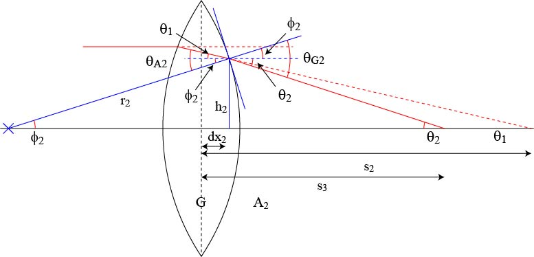
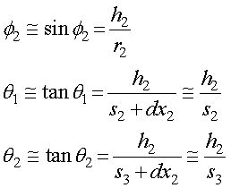
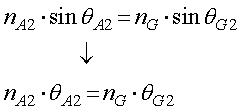
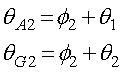
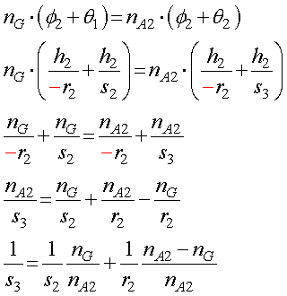
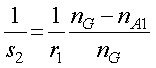
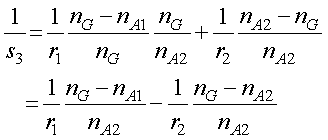
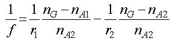
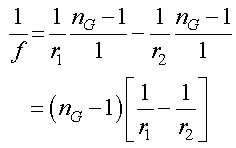

今度は以下の図のようなレンズ内（G)から外（A2)に出て行く光線を考えましょう．

さらに．．．結構複雑ですね．．．．
まずは，それぞれの記号の説明をしましょう．
φ２ ： 光線がレンズ左側に当たった場所の曲率半径の軸に対する角度
ｒ２ ： 曲率回転半径
ｈ２ ： そのときの高さ
ｄｘ１ ： そのときのレンズ中心からのずれ
θ１ ： 光線が屈折しないとして軸と交わる点での角度
θ２ ： 屈折した光線が軸と交わる点での角度
ｓ３ ： 屈折した光線が軸と交わる点の距離
θA2 ： 入射角
θG２ ： 屈折角
です．
幾何学的な関係は，近似を考えると，

となります．
ここで，θ１，は前ページではh1/s2，で計算していましたが，今回はｈ２を使います．
また，屈折の関係から，

．また，

これらを代入することにより，

と，ｓ３，を求めることができました．ここで曲率の定義からｒ２にマイナスが入っていることに注意しましょう．
ここで，ｓ２は前ページで求めましたので，


今回求めたｓ３とは平行光を入射した場合の軸との交点の位置なので，焦点，そのものですね．ですので，

となります．
もし，A1，A2が空気なら，nA1=nA2=1，となるので，

これがレンズメーカーの式となります！
次に，レンズの曲率と焦点距離との関係を求めてみましょう．